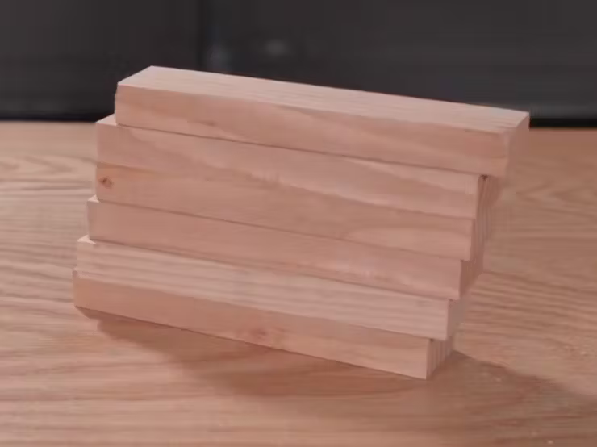
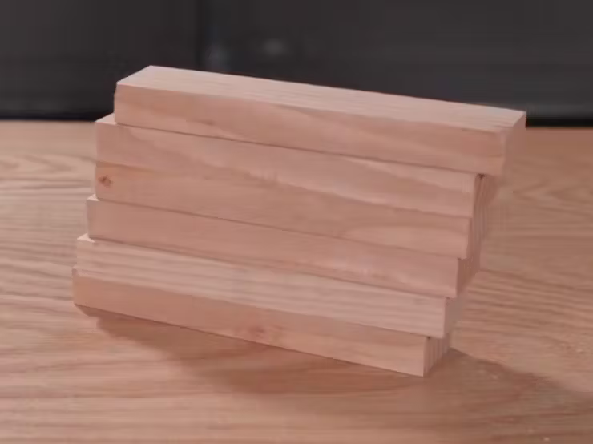

Esta página tem como objetivo apresentar os materiais, passos e componentes utilizados na criação do Smart Bartender. Explore as seções abaixo para obter detalhes sobre a construção e os elementos que compõem este inovador sistema de bartender automatizado.

Corte quatro peças de madeira de 1 por 2 nas seguintes dimensões: 4x de 16", 4x de 9", 6x de 7,5".
Parafuse duas peças de 16" e duas de 7,5" para formar cada lado da estrutura.
Conecte os lados com peças de 9" para a parte superior e inferior.
 


Use placas de fibra de densidade média (MDF) para criar plataformas para a bebida e eletrônicos.
Corte as placas nas dimensões: Plataforma para a bebida (12" x 9") e Plataforma para eletrônicos (11-7/8" x 7-3/8").
Faça recortes nas extremidades da plataforma da bebida para acomodar os suportes da estrutura.

Utilize folhas de PVC preto para criar painéis frontal, lateral esquerdo, lateral direito, acesso, superior, traseiro e internos.
Faça um recorte na parte frontal para a janela por onde a bebida será inserida.
Deixe o restante da estrutura aberto para a instalação de componentes antes do fechamento.

Imprima em 3D um suporte para o funil da bebida.
Parafuse o suporte na parte superior da estrutura e encaixe o funil.

Fixe os componentes eletrônicos na plataforma usando fita adesiva dupla-face.
Siga o diagrama de circuito para a conexão dos componentes.
Faça furos para passagem dos fios dos motores das bombas e do cabo de alimentação.
Cole uma fita de LED ao redor da estrutura para adicionar efeito visual.
Rote os fios entre os painéis externo e interno.
Imprima em 3D um coletor para unir as tubulações das bombas.
Faça furos no painel superior para passagem das tubulações.
Parafuse o coletor na parte traseira da estrutura.

Crie uma abertura retangular no painel frontal para a tela e fure os pontos de montagem.
Fixe a tela com parafusos e instale botões nos furos laterais.
Adicione um contorno impresso em 3D ao redor da tela.

Solde fios de energia aos terminais das bombas e adicione diodos para evitar corrente residual.
Organize os fios com fita elétrica para uma aparência mais limpa.

Adicione um suporte para copo, pressionando os encaixes nos furos da plataforma da bebida.
Consulte a página do Github para instruções sobre como configurar o software no Raspberry Pi.